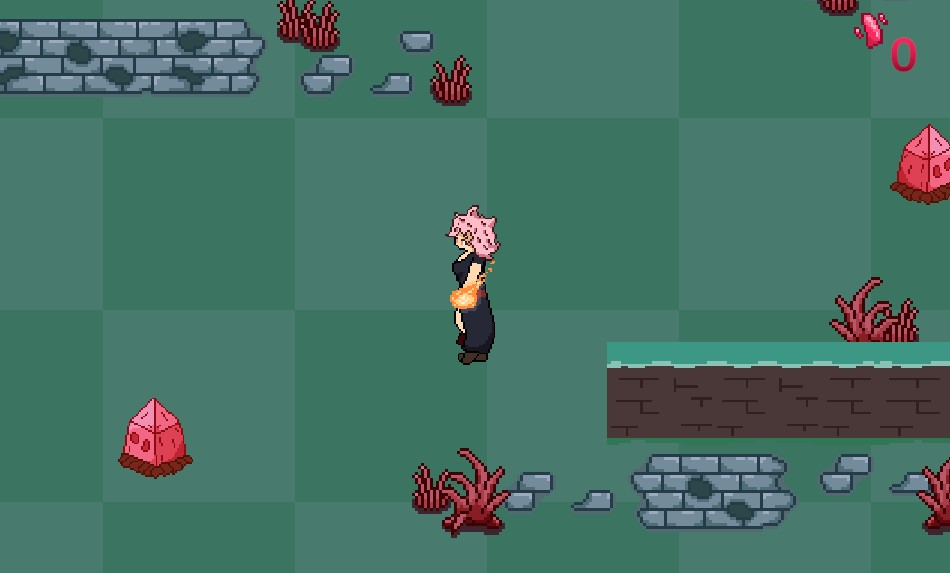

Novemnber 2, Blog 6

Escape From Efil
Programmer - Janet Chiem, Artist - Amelia Bettencourt, Featured Music: Pink Crystal Portal - Kami
Use WASD or arrow keys to control player movement and use the space bar to shoot fireballs. The fireballs will go in the last direction the player was moving when shot while standing still. The objective of the game is to kill the small crystal monsters and take their shards to the portal in order to escape from Efil.
Currently the game is still an early prototype, the first level is the only level that exists and it is not finished completely. The enemy AI for the crystals is working as intended, they are meant to run away from the player rather than fight them, we want to add another enemy in the future that will actually fight the player. We want the game to end up having multiple levels that you have to progress through, dialogue screens to better convey the narrative, and additional enemies. I would also want to update some of the art as some of the environment still uses placeholder artwork that is meant to convey the general idea of the object rather than its final design. Overall the prototype is in a state we are more or less happy with, however we do both want to continue building on the game until it is in a more polished state.
Play Now